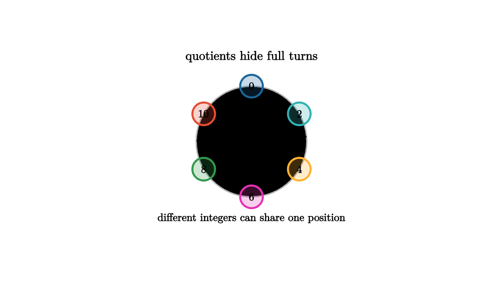

Quotients Collapse Symmetry Cleanly
A clock is an arithmetic lesson disguised as a circle. Add five hours to ten o'clock and the hand lands at three. In ordinary integer arithmetic, 10 + 5 = 15. On the clock, 15 and 3 describe the same position because full turns have been declared invisible. The quotient idea begins there: collapse a repeated motion and keep the information that remains.
The integers modulo 12 are cosets of 12Z. Each coset is a family of integers that differ by a multiple of 12. Arithmetic works because adding representatives and then collapsing gives the same result as collapsing first and adding classes:

source
let Dot = |pos, label, col| [
center{pos} fill{alpha{0.24} col} stroke{col, 3} Circle(0.18),
center{pos} Text(label, 0.62)
]
mesh scene = [
center{1.35u} Text("quotients hide full turns", 0.72),
stroke{LIGHT_GRAY, 2} Circle(0.88),
Dot([0, 0.88, 0], "0", BLUE),
Dot([0.76, 0.44, 0], "2", TEAL),
Dot([0.76, -0.44, 0], "4", ORANGE),
Dot([0, -0.88, 0], "6", MAGENTA),
Dot([-0.76, -0.44, 0], "8", GREEN),
Dot([-0.76, 0.44, 0], "10", RED),
center{0r} Tex("\\mathbb Z / 12\\mathbb Z", 0.68),
center{1.22d} Text("different integers can share one position", 0.62)
]For groups, the same story uses cosets. If H is a subgroup of G, a left coset gH is the collection of elements obtained by taking g and then doing anything from H. If H represents motions we agree to ignore, then all elements inside gH become one visible state.
There is one subtle requirement. To multiply cosets cleanly by (gH)(kH) = gkH, the subgroup must be normal. Normality says that hiding H remains consistent no matter where you stand in the group:
Without that consistency, different representatives of the same coset can give different products. With normality, the quotient G/H becomes a group.
source
let Row = |y, label, col| [
stroke{col, 4} Line([-1.45, y, 0], [1.45, y, 0]),
center{[-1.78, y, 0]} Text(label, 0.62)
]
let CosetPicture = |collapsed| [
Row(0.62 - 0.36 * collapsed, "H", BLUE),
Row(0.0, "gH", ORANGE),
Row(-0.62 + 0.36 * collapsed, "kH", TEAL),
center{[0, 1.08, 0]} Text("cosets partition the group", 0.62),
center{[0, -1.1, 0]} Text("collapse each row to one quotient element", 0.62)
]
"Partition"
mesh picture = CosetPicture(0)
mesh marker = []
play Fade(0.7)
"Collapse"
picture = CosetPicture(1)
play Lerp(1.0)
marker = [
center{[-0.8, 0, 0]} fill{alpha{0.2} ORANGE} stroke{ORANGE, 3} Circle(0.28),
center{[0, 0, 0]} fill{alpha{0.2} BLUE} stroke{BLUE, 3} Circle(0.28),
center{[0.8, 0, 0]} fill{alpha{0.2} TEAL} stroke{TEAL, 3} Circle(0.28)
]
play Grow(0.6)
"Multiply Classes"
marker = [
center{[-0.8, 0, 0]} fill{alpha{0.2} ORANGE} stroke{ORANGE, 3} Circle(0.28),
stroke{WHITE, 4} Arrow([-0.47, 0, 0], [-0.15, 0, 0]),
center{[0.2, 0, 0]} fill{alpha{0.2} TEAL} stroke{TEAL, 3} Circle(0.28),
stroke{WHITE, 4} Arrow([0.52, 0, 0], [0.84, 0, 0]),
center{[1.15, 0, 0]} fill{alpha{0.2} MAGENTA} stroke{MAGENTA, 3} Circle(0.28),
center{[0.2, -0.62, 0]} Text("representatives multiply, classes remember", 0.62)
]
play Trans(1.0)Quotients appear whenever a measurement has extra symmetry. In linear algebra, quotient spaces identify vectors that differ by a vector in a chosen subspace. If a camera cannot observe depth along one direction, then points along that invisible direction may be collapsed into the same measurement. The quotient keeps observable differences.
Group homomorphisms make the quotient idea unavoidable. A homomorphism phi: G -> K may send several elements of G to the identity of K. Those elements form the kernel. They are precisely the motions invisible to the map. The first isomorphism theorem says
This theorem is one of the cleanest sentences in algebra. If a map forgets exactly the kernel, then the source after that forgetting is the image. The quotient is the source viewed through the map's eyes.
A geometric example comes from rotations of a square. The full symmetry group has rotations and reflections. If an experiment can only detect whether the square's diagonal pair has been swapped, several different physical symmetries produce the same observed effect. The kernel contains symmetries that leave the observation unchanged. The quotient is the group of visible effects.
Quotients also prevent bloated descriptions. In modular arithmetic, all integers remain available as representatives, yet only finitely many classes matter. In topology, the fundamental group of a quotient space may be simpler or more revealing than the original description. In algebraic geometry, quotienting by ideals enforces equations as permanent rules.
The intuition is consistent across these settings. First identify a family of transformations or differences you want to treat as invisible. Then check that the identification respects the operation. Finally work in the collapsed world. A quotient is disciplined forgetting: it removes redundant motion while preserving the structure needed to compute.